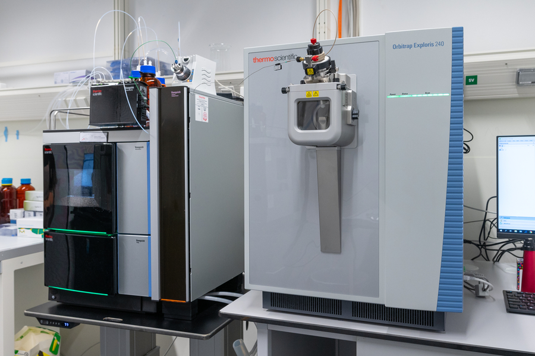
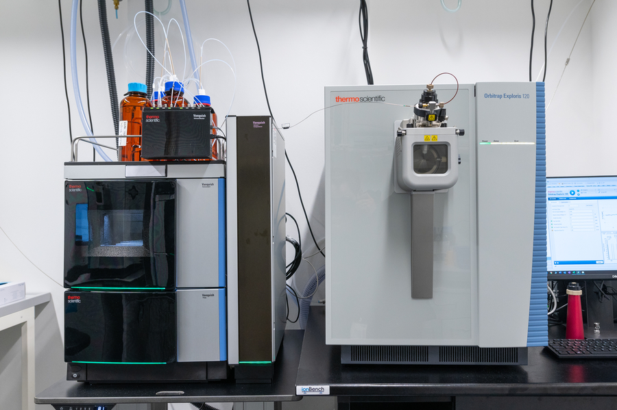

Metabolomics Core Facility · University of Cologne
Polar HILIC analysis coupled to high-resolution Orbitrap mass spectrometry. Quantitative, reproducible, and publication-ready data for your research.
Instrumentation

Primary Platform
Orbitrap Exploris 240
Hybrid quadrupole-Orbitrap optimised for untargeted metabolomics. Coupled to Vanquish UHPLC in HILIC mode for deep polar metabolome coverage in positive and negative ionisation.

Secondary Platform
Orbitrap Exploris 120
Compact Orbitrap system for high-throughput targeted and semi-targeted analyses. Ideal for quantitative studies requiring robust reproducibility across large sample cohorts.
Chromatographic Separation
Vanquish UHPLC · HILIC
Ultra-high performance liquid chromatography with polar HILIC columns, purpose-built for retaining and separating the hydrophilic metabolites that reversed-phase methods miss.
Software & Databases
Data Processing
Open-source and vendor pipelines for feature detection, alignment, and statistical analysis.
Reference Databases
Annotation is cross-referenced against curated public databases and our in-house spectral library.
About us
We are a dedicated metabolomics core facility embedded within the University of Cologne. Our team combines deep expertise in analytical chemistry, bioinformatics, and biological interpretation to deliver comprehensive metabolomics services for internal and external collaborators.
From sample preparation consultation to final statistical analysis, we support your project through every stage. Our polar HILIC methods excel at capturing the hydrophilic metabolome — nucleotides, amino acids, organic acids, and sugar phosphates — that reversed-phase methods miss.
Group Leader
Prof. Dr.
Christian Frezza
Alexander von Humboldt Professor of Metabolomics in Ageing
Affiliations
Services
Untargeted Metabolomics
Discovery-mode HILIC-MS with full-scan and MS² acquisition. Spectral library matching + in-silico annotation via SIRIUS/CSI:FingerID.
Targeted Quantification
Validated MRM-like workflows using exact masses. Internal-standard normalised concentrations with QC reports.
Statistical Analysis
PCA, PLS-DA, volcano plots, pathway enrichment (MetaboAnalyst / KEGG). Reproducible R/Python reports.
Sample Prep Consulting
Extraction protocol optimisation for cells, plasma, tissue, or biofluids. Pre-analytical QC assessment.
Data Management
Raw .RAW files, mzML conversion, peak tables, and annotated compound lists delivered via secure transfer.
Collaborations
Grant co-authorship, long-term method development, and dedicated instrument time for active collaborations.
Sample submission
Inquiry & Consultation
Contact us with your biological question. We'll advise on sample number, replicates, and extraction protocol.
Sample Submission
Fill out the sample submission form. Ship or hand-deliver samples on dry ice according to our guidelines.
Acquisition & QC
Samples run in randomised blocks with pooled QC injections. Real-time internal standard monitoring ensures run quality.
Data Delivery
Peak-picked, normalised tables with annotations and a QC report. Optional: statistical analysis and pathway mapping.
Sample Submission Form
Open in Google Sheets to view or make a copy, or download directly as Excel.
Contact
Location
CECAD Research Center
Joseph-Stelzmann-Str. 26
50931 Cologne, Germany
Phone & Social
+49 221 478-84308
@frezzalab.bsky.social